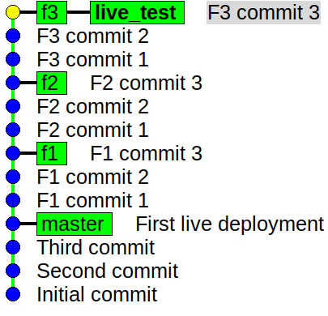
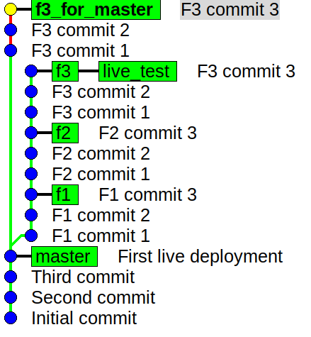

Note: This article assumes that you already know what the commands git merge
and git rebase do and what difference using one over the other makes to the
history of your git project. There are several resources on the Internet which
explain the difference between the two as well as how to use these commands.
This article purely focuses on describing a situation I recently encountered
within a small team I was working with.
My team went through a series of articles on git strategies and ended up being confused! There are many strategies out there but in the end, there are two problems I find with studying articles that describe these strategies.
Just like you cannot appreciate swimming until you are trying it in a real pool and no amount of instructions can help, same is the case with git branching strategies. You can go on and on but you will not be able to appreciate everything. This is because a git strategy evolves from painful experience of having first adopted less efficient strategies.
Even if you choose a so-called well tested strategy, chances that you have understood its fine points completely, are low. You will likely not implement the strategy the way it should be implemented.
So we decided to take some inspiration but eventually come up with a simple strategy that apparently worked and went ahead with it. Here is a brief description.
This worked really well and one fine day we rolled out the first ever public
version of the (web) application. We celebrated and then started working on the
next set of features. But now we realize that we have a test server which the
stakeholder can use to test new features and a production server. So, we create
a live_test branch which we reserve for initial delivery of features with
master tracking the production version.
So, the process continues only this time most merge requests are targeted on the
live_test branch so that as soon as the merge is carried out, the stakeholder
can play with the test server. (Some of the experts may find all this naive and
that is the point! The article is all about describing a naive approach and
enumerate the lessons learned from it!)
Now, here is where we started hitting limitations. Three developers create three
branches f1, f2 and f3 for three features. It turns out all of them finish
developing them at once and we decide to push the changes to the live test
server. For this, we adopt the same approach outlined above. f1 is merged into
live test branch with a simple fast-forward. But f2 needs a rebase to satisfy
our demand of linear history and then f3 on top of that. Great! The graph looks
all neat and linear. But our stakeholder drops a bomb which I was intuitively
expecting but for some reason did not end up putting safeguards in place. He
said, "Release f1 and f3, we need to work more on f2".
Now, why was this a bomb? Well, let me first write some commands down to create
a fresh repository and show you the situation we were facing. Now, don't worry
about reading each and every command. Just scroll through and check out the
repository graph that results from the these commands. But if you want to
recreate the situation, you can copy the contents into a file with (for
convenience) a .sh extension, place it an empty folder (so that existing folders
don't become git repositories all of a sudden!) and run sh some.sh.
git init echo "Someone" > a.txt git add . git commit -m "Initial commit" echo "Someone has comegitk &!" > b.txt git add b.txt git commit -m "Second commit" echo "More things to do" > c.txt git add . git commit -m "Third commit" echo "Second line" >> b.txt git add . git commit -m "First live deployment" git checkout -b live_test git checkout -b f1 echo "Param Computer" > d.txt git add . git commit -m "F1 commit 1" echo "Second line" >> d.txt git commit -am "F1 commit 2" echo "Third line" >> d.txt git commit -am "F1 commit 3" git checkout live_test git checkout -b f2 echo "My HPC" > f.txt git add . git commit -m "F2 commit 1" echo "Second Line" >> f.txt git commit -am "F2 commit 2" echo "Third line" >> f.txt git commit -am "F2 commit 3" git checkout -b f3 git branch -d f3 git checkout test_live git checkout -d f3 git branch -d f3 git checkout live_test git branch -D f3 git checkout -b f3 echo "Shared Writing" > p.txt git add . git commit -m "F3 commit 1" echo "Second line" >> p.txt git commit -am "F3 commit 2" echo "Third line" >> p.txt git commit -am "F3 commit 3" git checkout live_test git merge f1 git checkout f2 git rebase live_test git checkout live_test git merge f2 git checkout f3 git rebase live_test git checkout live_test git merge f3

So, you see what has happened. f3 and f2 branches have lost their meaning because of a rebase. Why? The whole point of a branch is that it contains commits dedicated to an issue, topic or a small goal. But f2 now contains f1 feature's implementation and f3 contains f2 and f1. So, what? Well, now let us get back to the situation which we were facing! We need to release f1 and f3 to the world. So, we need to move the master branch (which in our scheme of things represents the production server) to include f1 and f3 features.
$ git checkout master $ git merge f1
The above command solves the problem of getting f1 in. But will the following include f3?
$ git merge f3
No! Because of our blind love for linear histories we have rebased f3 which now includes commits from f2 and therefore when merged, will introduce the feature f2 into master! What can we do? Well, firstly learn our lesson! My and my engineers spent considerable time how our lack of past experience led us to not foresee this problem. We wanted to discuss a better git strategy for future projects but first we needed to attack the problem at hand - get f3 into master without f2.
This is a situation for which interactive rebase was designed! Interactive rebase is an incredibly powerful tool. And we are about to demonstrate its use. What we will do is ...
Let us switch to the f3 branch.
$ git checkout f3
Now,
$ git checkout -b f3_for_master
will create a new version of this branch and check it out. The name chosen is 'f3_for_master'. We could have directly worked on f3 but chose to create a copy of the branch to play safe. We didn't know and nor had the time to speculate whether the f3 branch as it stood was going to have future value or not. So, we adopt the simple principle that "what is excess may be trimmed but what is already trimmed away may not be recoverable". Now, we do an interactive rebase.
$ git rebase --interactive master
This should open your text editor with the following lines.
pick 0113eaa F1 commit 1 pick ce0b8d6 F1 commit 2 pick 87a8ccc F1 commit 3 pick 3745903 F2 commit 1 pick e9f3442 F2 commit 2 pick 113cec7 F2 commit 3 pick afad226 F3 commit 1 pick 5787d0a F3 commit 2 pick ab3cb39 F3 commit 3
We can delete the lines corresponding to those commits which are not a part of the original f3 branch before it was rebased.
So, our final set of lines look like.
pick afad226 F3 commit 1 pick 5787d0a F3 commit 2 pick ab3cb39 F3 commit 3
We save and quit. We can now see how the branches look like

So 'f3_for_master' is now what a feature branch should be - something which strictly adds those patches which when merged into any branch will ideally introduce that feature into that branch.
Merging this into master is now straightforward. I hope this article has been helpful in understanding what is that one sacrifices when choosing to merge or to rebase. I will confess that our workflow is quite basic and surely we could have done a better job in choosing a better workflow. But I am also quite convinced that the retelling of our experience is bound to help people deliberating over what kind of situations one can encounter in various workflows.
Please feel free to share your thoughts below about similar experiences OR strategies to better handle this and similar situations.